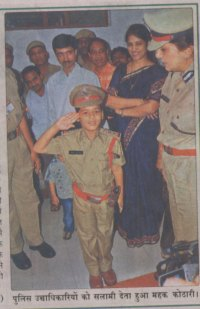
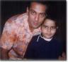
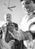

ये हैं हैदराबाद के महक कोठारी, उम्र ८ वर्ष अंतिम इच्छा?………… जी इन्होने कोई अपराध नहीं किया है अपराध कुदरत ने इनके साथ किया है लाइलाज कैंसर से पीड़ीत हैं और ये अब कितना जी पायेंगे पता नहीं। इनकी अंतिम इच्छा थी पुलिस ऑफिसर बनना। जो शायद पूरी ना हो पाती पर थेन्क्स टू …..मेक ए विश फ़ाऊण्डेशन जिसकी मदद से महक को कल एक दिन के लिये जुबली हिल्स पुलिस थाने का विधिवत इंसपेक्टर बनाया गया और थाने का प्रभार सौंपा गया।
महाराष्ट्र के अरूण और रंजीता कोठारी जो अभी हैदराबाद में रहते हैं , के पुत्र महक की कुछ महीनों पहले तबियत खराब हुई और अस्पताल में परीक्षण के दौरान उसे गले का कैसर पाया गया, तब से महक अपोलो अस्पताल में अपना इलाज करवा रहा है। डॉक्टरों ने अरूण और रंजीता को बता दिया था कि महक शायद ज्यादा जी ना पाये, पर पुलिस ऑफ़िसर बन कर समाज के भ्रष्ट लोगं को हथकड़ियाँ पहनाने की इच्छा रखने वाले महक को पता नहीं है कि वह बहुत कम दिनों का इस दुनियाँ में मेहमान है।
अक्सर डॉक्टरों से अपना सपना बताते रहता था, इस दौरान संस्था के सदस्यों ने महक की तबियत का हाल चाल जानने की वजह से मुलाकात ली और उन्हें भी नन्हे महक की इच्छा पता चली, उन्होने महक की इच्छा पूरी करने का निश्चय किया और हैदराबाद की पुलिस आयुक्त श्रीमती तेजदीप कौर मेनन से मुलाकात की और पूरी बात बताई श्रीमती मेनन ने पुलिस महानिदेशक श्री स्वर्णजीत सेन को मामला बताया तो श्री सेन, महक की इच्छा पूरी करने को तैयार हो गये।
इसके बाद महक को इंसपेक्टर की वर्दी पहना कर महानिदेशक के पास ले जाया गया जहाँ उसे जुबली हिल्स थाने का एक दिन का प्रभार दिया गया। और आखिरकार महक की इच्छा पूरी हुई। महक पता नहीं अब कितने दिन जिये पर एक संस्था के सहयोग से एक दिन के लिये ही सही पर पुलिस ऑफ़िसर बन सका।

1980 में अमरीका के क्रिस्टोफर नामक एक बालक जिसको ल्यूकोमिया नामक बीमारी हुई थी और उसकी इच्छा थी कि वो हाइवे पुलिसमैन बने उसके माता पिता की की दौड़धाम के बाद उसे एक दिन के लिये हाईवे पुलिस बनाया गया और इसी से मेक ए विश नाम की संस्था का उदय हुआ।
भारत में सन १९९५ में गांधार नामक एक बालक जिसे भी ल्यूकोमिया नामक बीमारी हुई, गाधार के माता पिता उसका बोन मेरो बदलवाने के लिये उसे अमरीका के नोर्थ केलिफ़ोर्निया के ड्यूक अस्पताल ले गये। गांधार इस शर्त पर अमरीका जाने के लिये तैयार हुआ कि वे उसे डिस्नीलैण्ड भी ले जायेंगे। उदय और गीता जोशी (गांधार के माता पिता) का इस दौरान इतना पैसा खर्च हुआ कि बिल भरना भी मुश्किल हो रहा था इसमें वे अपने बच्चे की इच्छा पूरा कैसे करते। इस दौरान उनका सम्पर्क मेक ए विश संस्था के एक स्वयं सेवक से हुआ और पूरी बात जानने के बाद उन्होने गांधार,गीता, उदय और भार्गवी (गांधार की बहन) को ६ दिन के डिस्नीलैण्ड भेजने का बंदोबस्त किया और गांधार की इच्छा पूरी हुई। भारत आने के बाद गांधार का निधन हो गया पर उदय और गीता के मन में एक नया विचार आया कि जैसे उनके बच्चे की इच्छा पूरी हुई उनको दूसरे बच्चों की इच्छा भी पूरी करनी चाहिये… बस यही विचार आगे बढ़ कर मेक ए विश की भारत शाखा के रूप में पनपा जिसने कल महक कोठारी की और उस जैसे लगभग सात हजार बच्चों की इच्छा पूरी की है ।
छोटे बच्चों की इच्छाएं भी कैसी कैसी मासूम सी होती है कोई अलग अलग स्थानों पर घूमना चाहता है , कोई शाहरूख खान या अन्य फ़िल्मी सितारों से मिलना चाहता है तो कोई पायलट बनना चाहता है, तो कोई टीवी और कोई मात्र तोते खरीदना चाहता है । नीचे दिये गये फ़ोटॊ में तो एक बच्ची मात्र एक गुड़िया खरीदना चाहती थी। संस्था ने बिना हिम्मत हारे बच्चों की इच्छा पूरी की और कर रहा है। और हमारे सितारे भी धन्यवाद के पात्र हैं जो अपनी व्यस्तता के बीच भी समय निकाल कर अपनी जिंदगी की अंतिम घड़ियाँ गिन रहे बच्चों की अंतिम इच्छा पूरी करने में अग्रसर रहते हैं।
निदा फ़ाजली के शब्दों में कहें तो
घर से बहुत दूर है मस्जिद
चलो किसी रोते बच्चे को हँसाया जाये


फोटो : The Hindu से एवं स्वतन्त्र वार्ता हैदराबाद
और